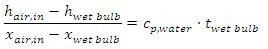
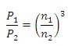
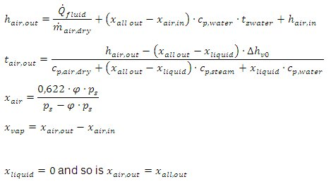

closed circuited cooling tower
Path: CARNOT/Source/Chiller
Purpose
Calculates the output THV and the energy and water consumption of the closed circuited cooling tower.
Description
The output temperature depends on air temperature, humidity, rpm of the fan, flow rate and glykol content.
wet –bulb temperature

power calculation in case of speed regulation
proportionality rule

water consumption

The saturation pressure p_s is calculated with the simplified approximation of Glück
| Symbol | used for |
|---|---|
| c | |
| h | |
| n | |
| m_dot | |
| p | pressure in Pa |
| P | power in kW |
| Q_dot | |
| t | temperature |
| x |
Inputs:
Outputs:
Parameters and Dialog Box
The cooling tower mask is an overview about the performance data and about the distribution of the data logging bus-signal.

Characteristics
Direct Feedthrough Yes
Sample time Inherited from driving block
Vectorized No